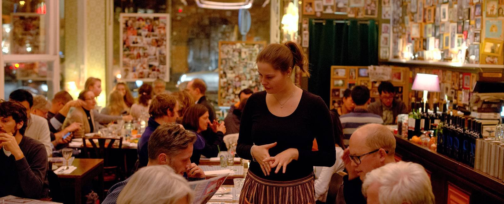
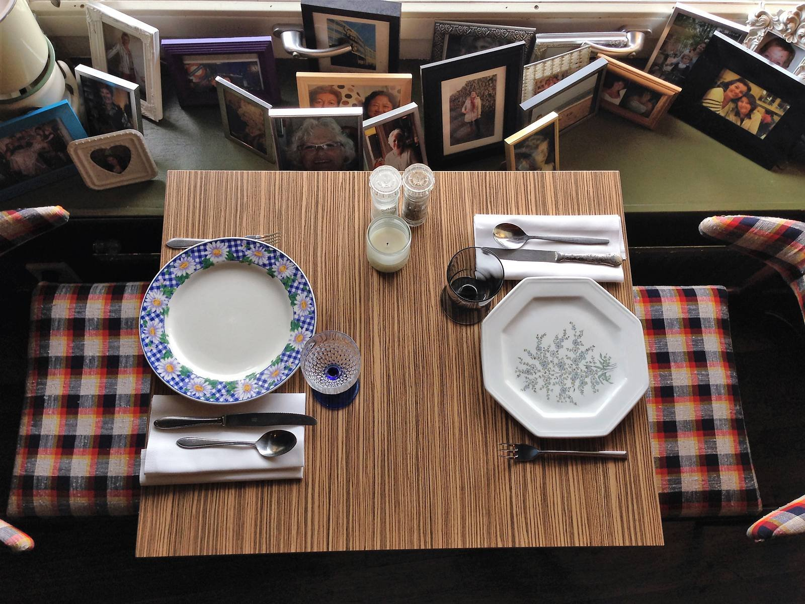
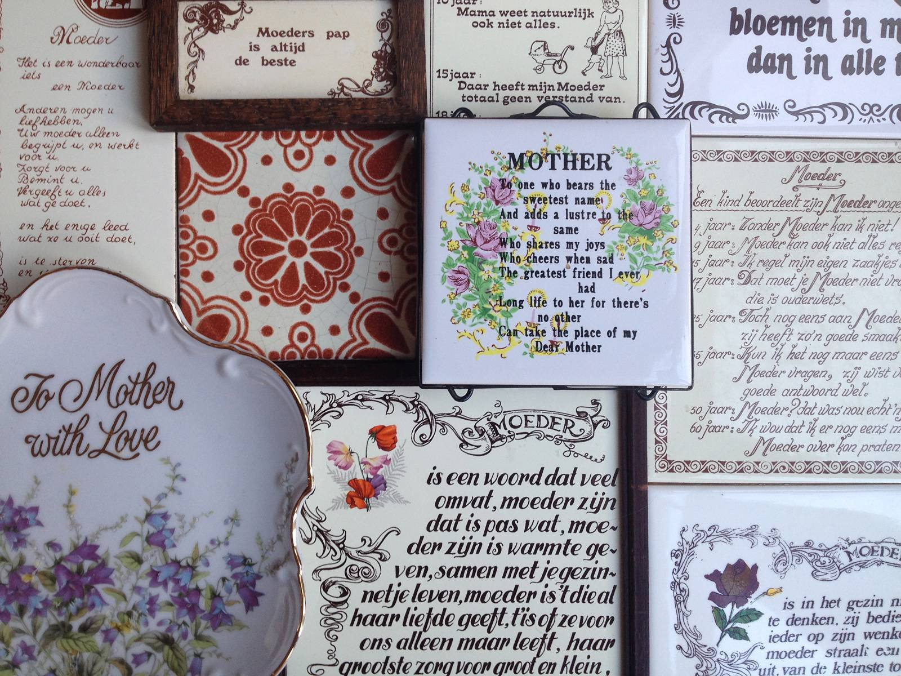

Hollandse rijsttafel 24,00 p.p.
Een combinatie van al onze Hollandse specialiteiten: suddervlees, hachee en stamppot, met gekookt aardappeltje, rode kool, spek, rookworst en jus. Vanaf 2 personen.
Elke dag open vanaf 17.00 uur
Stamppot, suddervlees en onze Hollandse rijsttafel, aan houten tafels met vintage servies, onder honderden foto's van moeders. Sinds 1990 aan de Rozengracht.


Diner van 17.00 tot 22.00 uur, laatste bestelling voor 22.00. Veel gerechten kunnen ook glutenvrij of lactosevrij.
Een combinatie van al onze Hollandse specialiteiten: suddervlees, hachee en stamppot, met gekookt aardappeltje, rode kool, spek, rookworst en jus. Vanaf 2 personen.
Stamppot20,00
Steeds wisselende oer-Hollandse stamppot met rookworst van slagerij Louman, een balletje gehakt en spek
Suddervlees23,00
Draadjesvlees volgens oma's recept, met gekookte aardappelen en rode kool
Hachee23,00
Dolly's runderstoofpotje met ui, gekookte aardappelen en rode kool
Dagsoep8,50
Steeds wisselende huisgemaakte soep, veelal vegetarisch
Kreeftensoep10,50
Onze huisgemaakte romige kreeftensoep
Erwtensoep9,50
Met spek en worst van slagerij Louman
Moeders dagvoorafjevanaf 14,50
Wisselend voorgerecht
Mama's saladevanaf 14,50
Een wisselende salade van Mama
Vis van de markt25,50
Steeds wisselend visgerecht
Moeders spare-ribs22,50
De kleinere portie, met frietjes en witte koolsla
Vaders spare-ribs25,50
De grotere portie, met frietjes en witte koolsla
Lende biefstuk26,50
Met chimichurrisaus. Bereiding 20-30 minuten
Gemarineerde kipspiesjes24,50
Met tabouleh met groenten en tzatziki
Moeders veggie's22,50
Wisselend vegetarisch hoofdgerecht
Vegetarische stamppot21,00
Met gegrilde groenten, gegratineerd met fetakaas
Stroopwafelparfait9,50
Huisgemaakt ijs met slagroom
Moeders wisselend toetje9,50
Appeltaart van Moeke9,50
Huisgemaakt appelgebak met slagroom
Cheesecake9,50
Met bosvruchtengelei en speculaasbodem
Irish coffee9,50
Moeders koffie9,50
Met een geheime likeur en een verrassende slagroom
Voor kinderen tot 12 jaar.
Soep5,50
Klein tomatensoepje met balletjes
Bordje Hollandse pot10,50
Rookworstje (glutenvrij) van slagerij Louman of balletje gehakt, met gekookte aardappeltjes, groenten naar keuze en appelmoes
Kinderstamppotje10,50
Met rookworstje (glutenvrij) van slagerij Louman of balletje gehakt, en appelmoes
Kinderportie spare-ribs11,50
Met frietjes en appelmoes
Vissticks11,50
Met frietjes en appelmoes
Kinderijsje3,50
Voor bij de borrel, van 17.00 tot 22.00 uur.
Mandje brood met dip4,50
Bakje olijven4,50
Oma Bobs bitterballen (8 stuks)9,00
Kaasstengels (8 stuks)9,00
Oma Bobs vegetarische bitterballen (8 stuks)9,50
Vegetarische loempia's (8 stuks)8,00
Heineken 5%vanaf 3,95
Texels Skillerwit 5%vanaf 5,75
Oedipus Gaia IPA 7%vanaf 5,95
Oedipus Mamas Blondvanaf 5,75
Wisselbier van de tapvanaf 5,75
Moeders bierplankje12,50
Mini-proeverij van 4 glaasjes tapbier (20 cl)
Texels Tuunwal tripel 8,5%5,95
Oedipus Pais Tropical session IPA 5%5,95
Oedipus Mannenliefde saison 6%5,95
Texels Skuumkoppe 6%5,50
Jutters bock 7%5,75
Wisselbier op flesvanaf 5,75
Amstel rosébier 4%4,50
Amstel Radler 2%4,50
Mongozo glutenvrij 5%5,50
Apple Bandit cider, glutenvrij 4,5%5,50
Heineken 0.04,25
Skuumkoppe 0.05,50
Radler 0.04,25
Brand IPA 0.05,25
Coca-Cola / Coca-Cola Zero3,95
Sourcy rood / blauw3,75
Sinas / 7-Up3,95
Tonic / Bitter lemon3,95
Lipton Ice Tea / Green3,95
Ginger ale3,95
Ginger beervanaf 3,95
Kraanvogel kombucha4,50
Verse jus d'orange4,50
Appelsap4,00
Tomatensap4,25
Fles water, bruis of plat (0,7 l)5,50
Karaf water (0,5 l)1,00
Koffie / espresso3,75
Cappuccino3,95
Koffie verkeerd / caffè latte4,25
Moeders koffie / Irish coffee9,50
Thee3,75
Muntthee / gemberthee4,25
Glas warm water0,95
Warme chocomelk3,95
Met slagroom + 0,50
Jenevers, likeuren, whisky's, wodka, gin, rum, Campari, cognac, calvados, grappavanaf 5,50
Prijzen kunnen veranderen door onverwachte prijsstijgingen.
Per glasvanaf 5,75
Per flesvanaf 25,00
Wit: Vinem Blanco (Chardonnay/Macabeo, Spanje) en Les Calcaires Sauvignon Blanc (Frankrijk). Zoet wit: Arrocero Moscatel Macabeo (Spanje). Rosé: Vinem Rosado (Spanje). Rood: Ondalan Tinto (Rioja, Spanje) en La Campagne Merlot (Frankrijk).
Marqués de Toledo brut, per glas7,50
Marqués de Toledo brut, per fles34,50
Desacato Verdejo, Rueda (Spanje)34,50
Kellerei Kaltern Pinot Grigio (Italië)35,50
Alvarinho Quinta Sa Lixa (Portugal)34,50
Nekumhoeve Riesling (Nederland)36,50
Matthieu de Brully La Fraisière Pinot Noir (Frankrijk)34,50
Titular Dão Touriga Nacional (Portugal)35,50
Vinalopó Crianza Cabernet (Spanje)37,50
Damana 5 Tempranillo (Spanje)37,50
Prijzen kunnen veranderen. Jaartallen van de wijnkaart kunnen soms afwijken.
Heb je een allergie, een speciaal dieet of een vraag over een gerecht? Onze medewerkers geven graag uitleg. Op de kaart staat al jaren een groot aantal gerechten die ook glutenvrij en lactosevrij geserveerd kunnen worden.
De originele kaarten als PDF: avondkaart, kinderkaart, drank- en bierkaart, wijnkaart.
Ooit zat in het pand aan de Rozengracht een dansschool. De grote neonlamp uit de jaren 50 aan het plafond en de houten vloer zijn daar nog de stille getuigen van. Sinds 1990 is Moeders hier gehuisvest.
Eigenaar Jurriaan vroeg bij de opening aan zijn gasten om een bord, glas en bestek mee te nemen. Daarmee was een belangrijk element van het Moeders-concept geboren. Tegelijk begonnen we foto's van moeders te verzamelen.
Tot op de dag van vandaag dekken we de houten tafels met vintage serviesgoed, en aan de wanden hangen inmiddels honderden foto's van moeders. Er komen nog elke week kiekjes bij. En al wordt de ruimte aan de wanden schaars: foto's blijven welkom!

In ons restaurant zijn alle moeders heldinnen. Breng een fotootje van je moeder mee, dan hangen wij haar tussen de andere kiekjes aan een van onze beroemde wanden.
Is je moeder, schoonmoeder of oma jarig? Is je vriendin of dochter zwanger of net moeder geworden? Meld het bij je reservering, dan zorgen wij voor een special treat. Neem jij in ruil een fotootje van haar mee, zodat ook zij aan onze wanden kan prijken.
Reserveren gaat alleen online, je krijgt direct een bevestiging per mail. Telefonisch reserveren kan niet.
Reserveer een tafelIets aanpassen of een vraag? Mail naar info@moeders.com.
In het centrum, 10 tot 15 minuten lopen vanaf de Dam of het Leidseplein.
| Restaurant | elke dag 17.00 - 24.00 |
|---|---|
| Keuken | elke dag 17.00 - 22.00 |
Tram 5, 13, 17 of 19 en bus 18. Vanaf Centraal Station tram 13 of 17, uitstappen bij halte Rozengracht/Marnixstraat. Vanaf het Leidseplein tram 5 of 19 tot halte Rozengracht/Lijnbaansgracht. Moeders ligt op die kruising, schuin tegenover de brandweerkazerne.
Vanaf de A10 afslag S105 richting centrum, rechtdoor tot de Nassaukade. Bij de stoplichten rechtsaf, links aanhouden en bij de kruising Nassaukade / Jan Evertsenstraat linksaf de Rozengracht op. Moeders ligt dan aan je rechterhand.
Parkeren: parkeergarage Q-Park/Europarking aan de Marnixstraat, op ongeveer 250 meter (bij het eerstvolgende stoplicht rechtsaf, na 250 meter aan je rechterhand). Op straat is het betaald parkeren tot 24.00 uur.